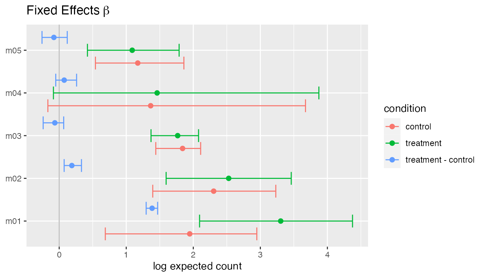
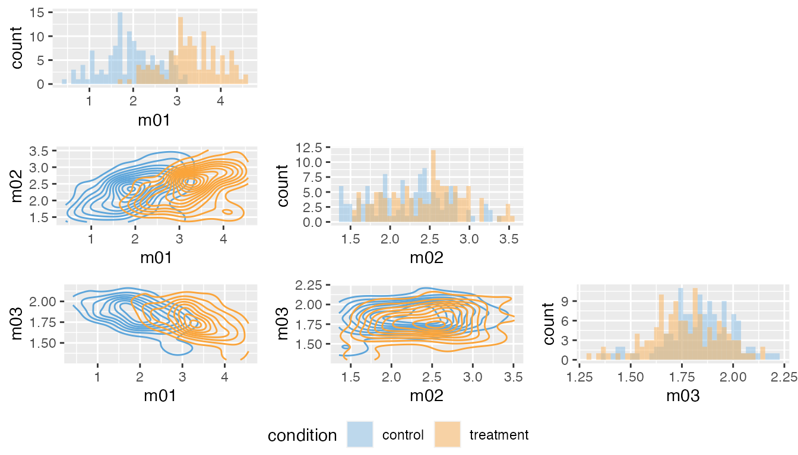
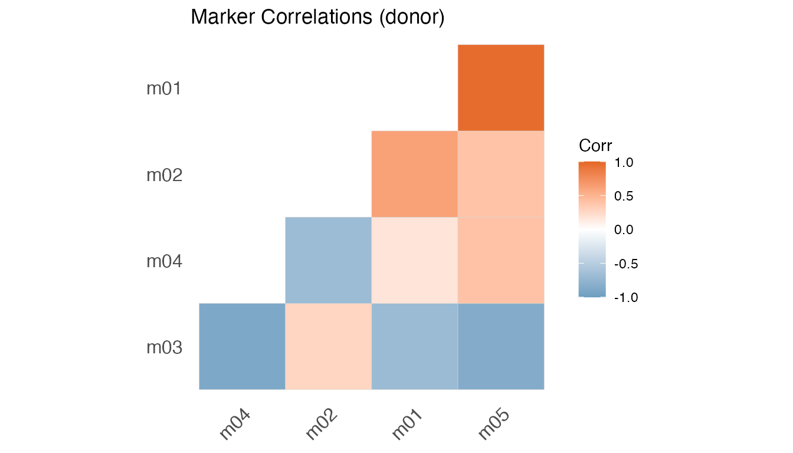
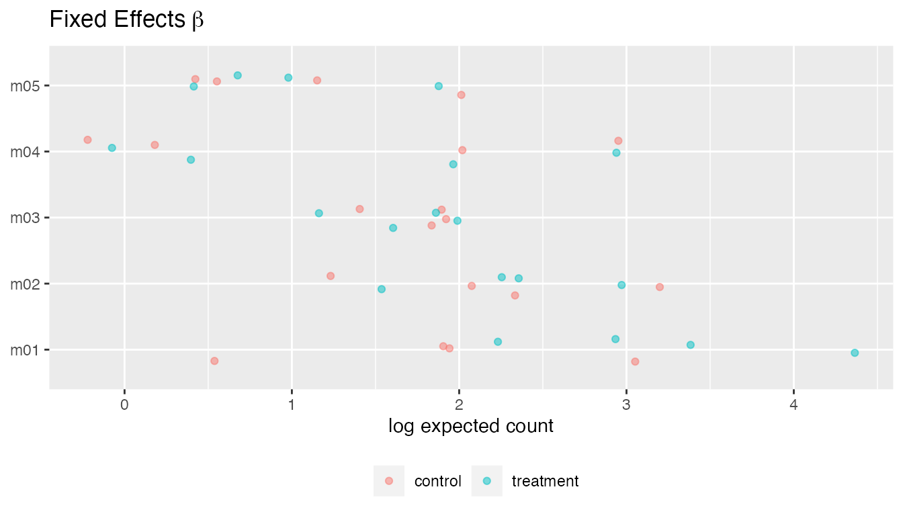
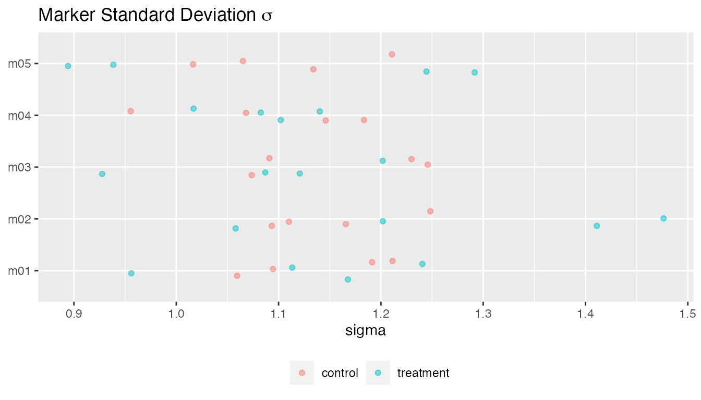
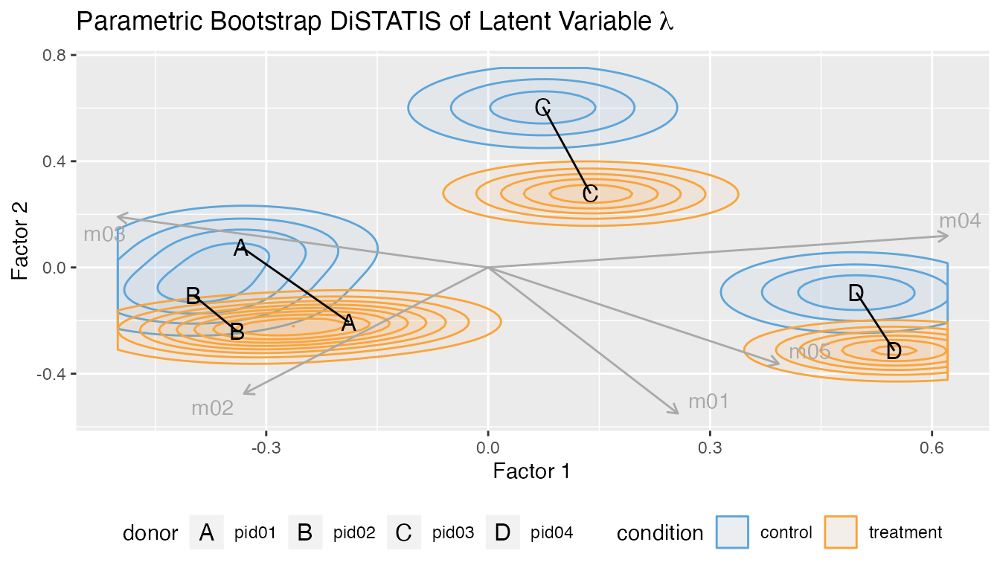

In this vignette, we show the cytoeffect workflow for both the full Bayesian hierarchical model and the parametric bootstrap with the simplified model.
Generate Data
Simulate dataset.
set.seed(1) df = simulate_data() str(df) #> tibble [800 × 7] (S3: tbl_df/tbl/data.frame) #> $ donor : chr [1:800] "pid01" "pid01" "pid01" "pid01" ... #> $ condition: Factor w/ 2 levels "control","treatment": 2 2 2 2 2 2 2 2 2 2 ... #> $ m01 : num [1:800] 64 22 36 33 87 9 11 143 81 105 ... #> $ m02 : num [1:800] 37 8 1 20 44 0 10 96 149 11 ... #> $ m03 : num [1:800] 3 1 14 31 4 19 2 2 0 6 ... #> $ m04 : num [1:800] 0 1 2 40 0 0 0 0 4 2 ... #> $ m05 : num [1:800] 10 1 4 0 1 8 4 0 1 11 ... df #> # A tibble: 800 x 7 #> donor condition m01 m02 m03 m04 m05 #> <chr> <fct> <dbl> <dbl> <dbl> <dbl> <dbl> #> 1 pid01 treatment 64 37 3 0 10 #> 2 pid01 treatment 22 8 1 1 1 #> 3 pid01 treatment 36 1 14 2 4 #> 4 pid01 treatment 33 20 31 40 0 #> 5 pid01 treatment 87 44 4 0 1 #> 6 pid01 treatment 9 0 19 0 8 #> 7 pid01 treatment 11 10 2 0 4 #> 8 pid01 treatment 143 96 2 0 0 #> 9 pid01 treatment 81 149 0 4 1 #> 10 pid01 treatment 105 11 6 2 11 #> # … with 790 more rows condition = "condition" group = "donor" protein_names = names(df)[3:ncol(df)]
Bayesian Inference
Sample from posterior distribution using Stan.
fit = poisson_lognormal(df, protein_names = protein_names, condition = condition, group = group, r_donor = 2, warmup = 200, iter = 325, adapt_delta = 0.8, num_chains = 1) #> #> SAMPLING FOR MODEL 'poisson' NOW (CHAIN 1). #> Chain 1: #> Chain 1: Gradient evaluation took 0.001177 seconds #> Chain 1: 1000 transitions using 10 leapfrog steps per transition would take 11.77 seconds. #> Chain 1: Adjust your expectations accordingly! #> Chain 1: #> Chain 1: #> Chain 1: Iteration: 1 / 325 [ 0%] (Warmup) #> Chain 1: Iteration: 32 / 325 [ 9%] (Warmup) #> Chain 1: Iteration: 64 / 325 [ 19%] (Warmup) #> Chain 1: Iteration: 96 / 325 [ 29%] (Warmup) #> Chain 1: Iteration: 128 / 325 [ 39%] (Warmup) #> Chain 1: Iteration: 160 / 325 [ 49%] (Warmup) #> Chain 1: Iteration: 192 / 325 [ 59%] (Warmup) #> Chain 1: Iteration: 201 / 325 [ 61%] (Sampling) #> Chain 1: Iteration: 232 / 325 [ 71%] (Sampling) #> Chain 1: Iteration: 264 / 325 [ 81%] (Sampling) #> Chain 1: Iteration: 296 / 325 [ 91%] (Sampling) #> Chain 1: Iteration: 325 / 325 [100%] (Sampling) #> Chain 1: #> Chain 1: Elapsed Time: 122.713 seconds (Warm-up) #> Chain 1: 93.3971 seconds (Sampling) #> Chain 1: 216.11 seconds (Total) #> Chain 1:
Plot marginal credible intervals.
plot(fit, type = "theta")

plot(fit, type = "beta")

plot_pairs(fit, "m01", "m02", "m03")

plot(fit, type = "sigma") #> New names: #> * NA -> ...1 #> * NA -> ...2 #> * NA -> ...3 #> * NA -> ...4 #> * NA -> ...5 #> * ...
plot(fit, type = "Cor") #> [[1]]
#>
#> [[2]]
Multivariate DiSTATIS plot.
plot_distatis(fit, ndraws = 125)

Frequentist Inference
Fit model using composite maximum likelihood estimatation.
fit = poisson_lognormal_mcle(df, protein_names = protein_names, condition = condition, group = group, ncores = 1)
Plot marginal credible intervals.
plot(fit, type = "beta") #> New names: #> * NA -> ...1 #> * NA -> ...2 #> * NA -> ...3 #> * NA -> ...4 #> * NA -> ...5 #> * ...

plot(fit, type = "sigma") #> New names: #> * NA -> ...1 #> * NA -> ...2 #> * NA -> ...3 #> * NA -> ...4 #> * NA -> ...5 #> * ...

plot(fit, type = "Cor")
Multivariate DiSTATIS plot.
plot_distatis(fit, ndraws = 125)
